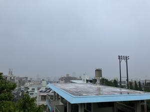
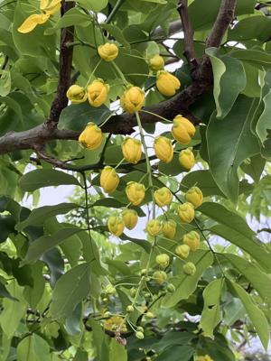
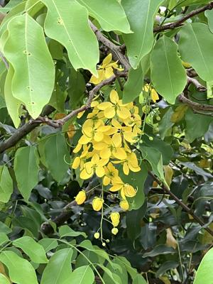
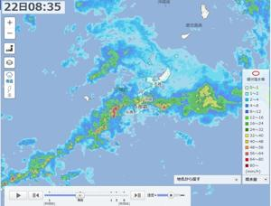

うるがいの話 ある日
最新: ノートパソコン画面が壊れる【うるがいの話 ある日】とは 一日だけのプログです
『うるがいの話』の最新一日だけのプログで、通信料が少なく経済的だ。カニの画像をクリックすると全ての日付が載る『うるがいの話』サイトを表示します
|
|
【うるがいの話】 うるがい(ｳﾙｶﾞｲ urugai)とは、『もずくがに』の名前でとても大きくなります。 |
|---|---|
|
|
【カミマヤーの話】 猫のことを方言でマヤーといいます。カミマヤー（kamimayaa）とは、神の猫のことです。 |
|
【たながぁの音楽】 たながぁ（ﾀﾅｶﾞｰ tanagaa）とは手長えびのことで、何種類かあり大きいのは車 エビぐらいになります。 |

|
【ぶながぁの話】 ぶながぁ(ﾌﾞﾅｶﾞｰ bunagaa)とは、赤い髪の毛、赤い身体、そして身長は１ｍ２０ｃｍ ぐらい、川の蟹を食べているの目撃された。場所は沖縄県国頭郡大宜味村のと ある村僕の隣近所に住んでいる爺さんから、聞いた話です。 |
|
|
【ギーマの話】 ギーマ(giima)とは、山原の里山に咲くスズランに似た、 花を付けます。実は食べられます、 気が付くと口の周りが紫になっています。 |
2024年05月22日 (水）ノートパソコン画面が壊れる
17:36
 
ヨメが使っている２０１０年製のノートパソコン（子供が大学生の時に使っ
ていた）の画面の上三分の一が、黒くなる。去年から、画面がちらつく時が
あって、そのうち壊れるゼと話していた。すぐさま、２０１２年製のノート
パソコン（コドモが大学生の時の２世代目）に切り替える。ただ、お気に入
りがセットアップさない、ん？、私の洋服ダンスに収めていた古いモニター
を壊れたノートパソコンにつなげ、お気に入りを移植させ無事リカバリ対応
を終える。

コドモが、昨日、１０年以上も利用しているアクアのバッテリを交換しない
といけなくなった（２２万もするらしい）と言ったばかりである。こういう
のってなぜか続くものである。今日も朝から、一日中雨である。（ダムの貯
水率は、７５％を超えた）

１７時２８分 ビットコインの総資産 ￥３１、６９４（↓４９１）